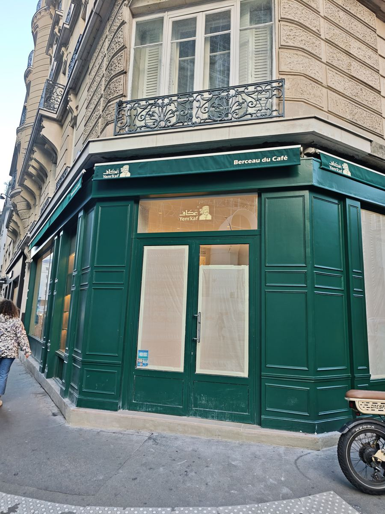
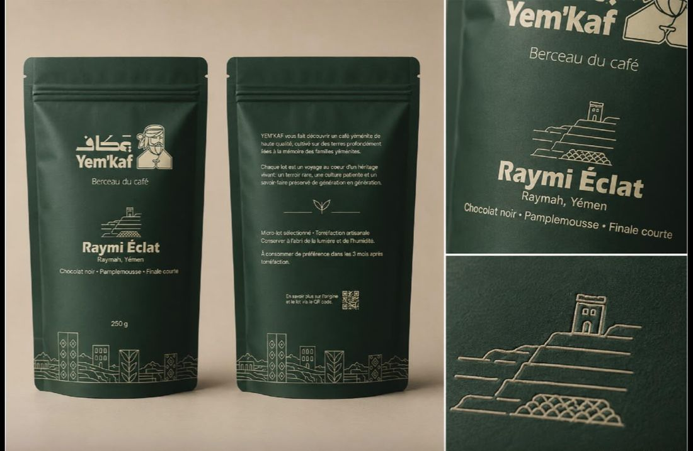
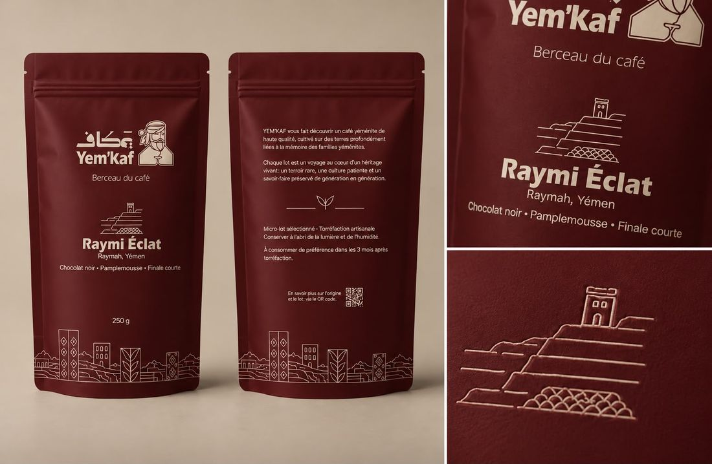

Mode d’emploi
Module 3 · Charte de marqueÀ quoi elle sert
C’est la référence commune pour tout ce qui est écrit, imprimé ou publié au nom de Yem’kaf : sachets, carte, site, réseaux sociaux, enseigne, plaquette. En cas de doute sur un nom, une couleur ou une phrase, la réponse est ici.
Pour qui
Toute l’équipe. Yousif pour le site, les réseaux et le graphiste ; Khaled pour le nom des cafés ; les baristas pour la façon de présenter les boissons.
Comment l’utiliser
- Lisez la promesse et les cinq principes : c’est ce que chacun doit savoir dire.
- Pour nommer un café, suivez Les noms des cafés et la règle d’origine.
- Envoyez Couleurs et logo au graphiste, à l’imprimeur et au développeur du site.
- Avant chaque commande d’impression, cochez la liste Étiquetage des sachets.
- Pour un texte ou un post, relisez Comment parler de Yem’kaf.
Le Yémen, berceau de la culture du café, servi rue du Renard.
Yem’kaf n’est pas un coffee shop de plus dans le Marais. C’est le lieu de Paris où l’on boit le café du pays qui l’a fait connaître au monde, préparé comme on le prépare là-bas : Qishr, Shai Adeni, Qahwa Baydani. À Paris, le Yémen se trouve surtout dans les restaurants ; Yem’kaf en fait une maison du café.

Les cinq principes
Si l’on ne retient qu’une chose de cette charte, c’est cette liste.
L’origine est la promesse : la dire juste
« Berceau du café » est fort et défendable quand on parle de la culture du café : le Yémen est le premier pays à l’avoir cultivé et bu comme boisson (XVe siècle), et le port de Mokha a donné son nom au « moka ». La plante, elle, vient d’Éthiopie. La signature reste « Berceau du café » ; dans les textes longs, on écrit « berceau de la culture du café ».
Une identité forte, tenue partout
Le personnage au turban et à la tasse, la calligraphie koufique يمكاف, la frise des maisons-tours, des terrasses et des feuilles de caféier, le vert profond et le crème. Le même logo, le même vert et la même signature sur le store, les sachets, le site, les gobelets et la caisse.
Deux registres de noms, chacun sa place
Le café vert vendu aux torréfacteurs porte le nom de son terroir (Harazi, Raymi) : c’est le langage des professionnels. Les sachets vendus aux clients portent les noms franco-yéménites de la gamme (Port de Moka, Terrasses de Raymah, Cimes de Haraz…), avec l’origine réelle en sous-titre.
Le rituel avant l’espresso
Tout le Marais sait faire un cappuccino. Personne ne sert un Qishr aux épices ou un Shai Adeni mijoté. Les boissons yéménites sont en tête de carte, et chaque nouveau client se voit proposer une petite tasse de Qishr, racontée en une phrase. C’est ce qui fait venir, revenir et publier.
La transparence comme preuve
Village, altitude, producteur, date de torréfaction, prix payé : le QR code du sachet mène à la fiche du lot. Le règlement européen contre la déforestation imposera de toute façon la géolocalisation des parcelles (fin 2026 ou mi-2027 selon la taille de l’entreprise) : autant en faire un atout.
Les noms des cafés
Direction « Élégance franco-yéménite » : un mot français chic ou architectural et un lieu mythique du Yémen. Ces noms habillent les sachets vendus aux clients ; le café vert vendu aux pros garde le nom de son terroir.
La règle d’origine. Shibam, Tarim, Socotra, Aden ou le Wadi Hadramaout ne cultivent pas de café. Ces noms sont des noms de fantaisie : chaque sachet indique sous le nom d’où vient vraiment le café, par exemple « Café du Yémen · région de Haraz · village de … ». À l’inverse, un nom de région caféière (Haraz, Raymah, Bura’a, Taëz) ne s’utilise que si le café vient bien de là.
Avant d’imprimer un nouveau nom : recherche d’antériorité à l’INPI (un nom comme « Temple du Soleil » ou « Port de Moka » peut déjà être déposé), et dépôt de la marque Yem’kaf si ce n’est pas fait.
| Nom | Lieu et histoire | Usage | Type de nom |
|---|---|---|---|
| Port de Moka | Le port d’où le café yéménite partait vers le monde | Assemblage maison de l’espresso : tout le café du Yémen passait par Moka | Maison |
| Cimes de Haraz | Les sommets de la région de Haraz | Café d’origine Haraz | Origine réelle |
| Terrasses de Raymah | Les montagnes en terrasses de Raymah | Café d’origine Raymah | Origine réelle |
| Jardins de Bura’a | Les montagnes vertes de Bura’a, terrasses et forêt | Café d’origine Bura’a | Origine réelle |
| Citadelle de … | Une forteresse de Taëz (al-Qahira) | Café de la région de Taëz | Nom à choisir |
| Château de Ghumdan | Le palais-tour légendaire de Sanaa (قصر غمدان) | Micro-lot rare, coffret Prestige | Fantaisie |
| Belqees la Belle | Bilqis, la reine de Saba | Micro-lot prestige ou édition de fête | Fantaisie |
| Toits de Sanaa | Les maisons-tours de la vieille ville | Coffret de la Saint-Valentin, ou café des hauts plateaux de Sanaa | Fantaisie |
| Passage de l’encens | La route de l’encens, richesse de Saba et du Hadramaout | Le mélange épicé : les épices de la route de l’encens | Fantaisie |
| Nuit d’Aden | La ville portuaire, avec un air de chanson française | Café doux du soir | Fantaisie |
| Tours de Shibam | Les tours de terre, « Manhattan du désert » | Édition limitée ou coffret | Fantaisie |
| Temple du Soleil | La reine de Saba et le culte du soleil | Édition limitée | Fantaisie |
| Oasis du Wadi | Les palmiers du Wadi Hadramaout | Édition limitée | Fantaisie |
| Rive de Tarim | Tarim, ville savante du Hadramaout | Édition limitée | Fantaisie |
| Île de Socotra | L’île et son arbre à sang-de-dragon | Café expérimental ou fermenté | Fantaisie |
| Vallée de … | Une grande vallée du Yémen | Piste : Vallée de Dhahr, le palais sur son rocher | Nom à choisir |
| Comptoir de … | Un ancien poste de commerce | Piste : Comptoir de Bayt al-Faqih, le grand marché du café au XVIIIe siècle | Nom à choisir |
« Origine réelle » : le café vient de ce lieu. « Fantaisie » : le lieu évoque le Yémen sans cultiver de café, l’origine réelle s’écrit en sous-titre. « Maison » : assemblage de plusieurs lots yéménites.
Couleurs et logo
Les valeurs officielles à transmettre au graphiste, à l’imprimeur et au développeur du site.
| Élément | Règle |
|---|---|
| Vert | Un seul vert : #305640, partout (logo, frise, site, sachets, store). Les fichiers du logo actuellement en #355A54 sont à réexporter en #305640. |
| Valeurs RVB | Utiliser les valeurs ci-dessus. L’ancien nuancier affiche les RVB, TSL et CMJN à l’envers (de droite à gauche) : « 205, 232, 241 » donnerait un bleu ciel au lieu du crème. |
| Logo | Crème sur fond vert, vert sur fond clair. Ne pas le déformer, ne pas changer ses couleurs, laisser un espace libre autour. |
| Nom de la marque | « Yem’kaf » dans les textes (apostrophe, k minuscule) ; « YEM’KAF » seulement quand tout le texte est en capitales. |
| Signature | « Berceau du café », en français, partout (store, enseigne, sachets). L’anglais peut venir en second sur le site. |
| Arabe | يمكاف en koufique sur le logo ; le nom arabe des boissons (قشر pour le Qishr, شاي عدني pour le Shai Adeni) peut accompagner le nom français sur la carte. |
Étiquetage des sachets
À cocher avant chaque commande d’impression : une mention oubliée coûte cher une fois les sachets imprimés.
Mentions obligatoires
- Dénomination : « Café torréfié en grains » ou « Café torréfié moulu ».
- Poids net : 150 g, 200 g ou 250 g.
- Date de durabilité minimale : « À consommer de préférence avant le … » (une vraie date, étiquette autocollante possible).
- Numéro de lot.
- Nom et adresse de l’exploitant : YEM’KAF SAS, 24 rue du Renard, 75004 Paris.
- Logo Triman et Info-tri (obligatoires depuis 2022, amende jusqu’à 15 000 €).
- Liste des ingrédients pour le mélange épicé (café, cardamome, gingembre…), avec les pourcentages.
Mentions de marque
- Nom de la gamme (voir le tableau des noms) et, en sous-titre, l’origine réelle : région, village, altitude.
- Date de torréfaction : attendue par les amateurs.
- Notes de dégustation propres à chaque lot, issues d’un cupping (jamais les mêmes notes sur plusieurs cafés).
- QR code vers la fiche du lot sur le site.
- « Micro-lot » uniquement pour un vrai micro-lot ; sinon « Lot sélectionné ».
- Couleur du sachet : vert pour la gamme, bordeaux pour une seconde gamme (micro-lots ou mélange épicé).


Notre choix : 100 % Yémen
Pourquoi la carte ne sert que du café yéménite, et ce que cela coûte. Café du Yémen : environ 55 € le kilo vert tout compris, soit 68,75 € le kilo vendable après torréfaction. Autre origine de spécialité : environ 12 € le kilo vert livré en Europe, soit 15 € le kilo vendable.
| Café dans la tasse | Coût par kg vendable | Espresso 10 g | Boisson lactée 18 g | Sachet 250 g | Économie par boisson lactée |
|---|---|---|---|---|---|
| 100 % Yémen | 68,75 € | 0,69 € | 1,24 € | 17,19 € | — |
| Assemblage 60 % Yémen / 40 % autre | 47,25 € | 0,47 € | 0,85 € | 11,81 € | 0,39 € |
| Assemblage 50 / 50 | 41,88 € | 0,42 € | 0,75 € | 10,47 € | 0,49 € |
| Autre origine seule | 15,00 € | 0,15 € | 0,27 € | 3,75 € | 0,97 € |
Le prix du café vert se règle dans le simulateur (« Vos chiffres », onglet Paramètres) ; ce tableau suppose 55 € le kilo.
Carte multi-origines
Éthiopie, Colombie, Brésil à côté du Yémen. Moins d’un euro d’économie par boisson, mais Yem’kaf deviendrait un coffee shop de plus face à Terres de Café, à cinq minutes, sur son propre terrain. La promesse « Berceau du café » perdrait son sens.
100 % Yémen au comptoir
Espresso, filtre, boissons traditionnelles, sachets d’origine et coffrets : uniquement du Yémen. Pour les boissons lactées, un assemblage maison de lots yéménites de grade plus accessible réduit le coût tout en restant 100 % Yémen.
Le mélange épicé
Café yéménite moulu avec des épices (cardamome, gingembre, cannelle, clou de girofle), environ 85 / 15, pour préparer une qahwa maison. Vendu 24 € les 200 g. Le café reste 100 % Yémen ; la liste des ingrédients figure sur le sachet.
Le droit. Le Code de la consommation interdit toute présentation trompeuse sur l’origine. Sous une marque nommée Yem’kaf avec la signature « Berceau du café », un client pense que tout est yéménite. Si un café d’une autre origine est un jour proposé (un décaféiné, par exemple : le décaféiné yéménite est quasi introuvable), il est indiqué clairement sur la carte, le sachet et le site, avec les pourcentages, et ne porte pas de nom yéménite.
L’approvisionnement. Depuis la prise du port de Mokha (septembre 2026), le stock de sécurité et un torréfacteur à façon de secours sont les vraies protections de la carte 100 % Yémen.
Comment parler de Yem’kaf
Une voix chaleureuse, précise et fière. Le Yémen raconté par ses montagnes, ses familles et son savoir-faire, jamais par la guerre ou la misère.
À dire
- « Cultivé en terrasses à 2 000 m d’altitude, dans le Haraz. »
- « Le Qishr (قشر) : une infusion de cosses de café aux épices, que l’on boit au Yémen depuis des siècles. »
- « Lot de [village], récolte [année], torréfié le [date]. »
- « Bienvenue chez Yem’kaf. Vous goûtez notre Qishr ? »
À éviter
- « Le meilleur café du monde » : invérifiable.
- Les images de conflit pour vendre : la presse a déjà épinglé la mode du « café yéménite » sur TikTok.
- « Bio », « équitable » ou « micro-lot » sans certificat ni preuve.
- Tout nom yéménite sur un café qui ne l’est pas.